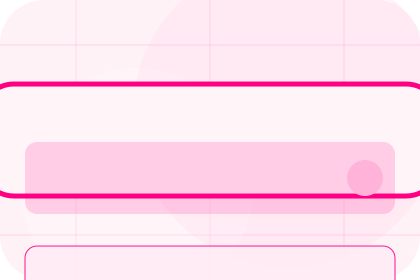
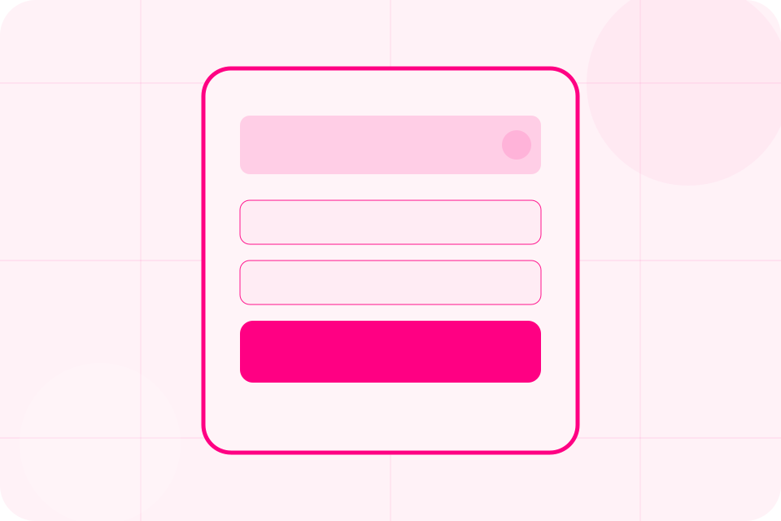
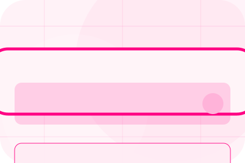
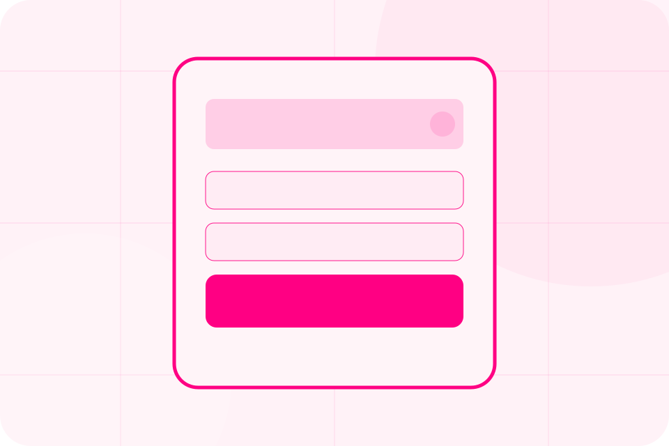
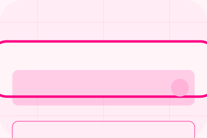

Details
What information helps Shield respond with a useful answer instead of a generic reply.
Contact / 01
Contact opens as a clear insurance decision hub: what Shield offers, who it helps, why it matters, and which route to take first.
The first screen combines positioning, proof, primary action, and fast internal navigation, so people can act immediately or compare the rest of the contact route with context.
Friendly quote hero
Select the closest route and Shield keeps the next step, proof, and follow-up expectation aligned with family and asset protection.

Contact / 02
Quote converts customer proof into a useful buying signal: the problem, the experience, and what changed afterward.
Proof stays believable by focusing on situation, service experience, and practical change rather than vague praise or unsupported results.
Request QuoteWhat the visitor needed before choosing Shield, written with enough context to feel real.
How the service, product, or support felt during the process, not just that it was good.
What became easier to decide, complete, buy, book, or trust after the interaction.
Contact / 03
Claims makes the contact path concrete: what to send, how the response works, and what Shield needs before visitors request a quote.
The section reduces contact friction by naming the channel, expected detail, privacy path, and response expectation instead of dropping visitors into a generic form.
Request QuoteWhat information helps Shield respond with a useful answer instead of a generic reply.
How the visitor should think about response, urgency, location, or availability.
The expected next message keeps scope, timing, and the first practical step clear.
Contact / 04
Support explains the practical scope, best-fit situations, and expected outcome so insurance visitors can compare options without decoding jargon.
The section keeps the offer concrete: what is included, who it is best for, what decision it supports, and which linked route gives the deeper detail.
Open ContactShield structures support around best fit, what changes, and a clear next route so visitors can compare the block quickly before they request a quote.
Request QuoteContact / 06
Phone makes the contact path concrete: what to send, how the response works, and what Shield needs before visitors request a quote.
The section reduces contact friction by naming the channel, expected detail, privacy path, and response expectation instead of dropping visitors into a generic form.
Request QuoteWhat information helps Shield respond with a useful answer instead of a generic reply.
How the visitor should think about response, urgency, location, or availability.

The expected next message keeps scope, timing, and the first practical step clear.
Contact / 07
Office makes the contact path concrete: what to send, how the response works, and what Shield needs before visitors request a quote.
The section reduces contact friction by naming the channel, expected detail, privacy path, and response expectation instead of dropping visitors into a generic form.
Request QuoteWhat information helps Shield respond with a useful answer instead of a generic reply.
How the visitor should think about response, urgency, location, or availability.
The expected next message keeps scope, timing, and the first practical step clear.
Contact / 08
Hours makes the contact path concrete: what to send, how the response works, and what Shield needs before visitors request a quote.
The section reduces contact friction by naming the channel, expected detail, privacy path, and response expectation instead of dropping visitors into a generic form.
Request QuoteWhat information helps Shield respond with a useful answer instead of a generic reply.
How the visitor should think about response, urgency, location, or availability.
The expected next message keeps scope, timing, and the first practical step clear.
Contact / 09
Submit makes the contact path concrete: what to send, how the response works, and what Shield needs before visitors request a quote.
The section reduces contact friction by naming the channel, expected detail, privacy path, and response expectation instead of dropping visitors into a generic form.
Request QuoteShield keeps submit practical: send the key details, choose the right contact route, and know what kind of reply to expect.
Request QuoteContact / 10
Shield closes the contact route with a clear action, a quick reminder of the value, and a low-friction way to request a quote.
Visitors who are ready can use the primary action. Visitors who are still comparing can scan the section links, proof, and support routes before they request a quote.
Request QuoteThe final block keeps the choice simple: act now, compare one more proof route, or send enough detail for a focused response.
Request Quote
family and asset protection
A quote-first insurance site with pink action, chat-like steps, playful policy cards, and claims reassurance. Contact ends with a direct path to request a quote, plus enough context for visitors who still need to compare.

Request QuoteCover, claims, limits, and exclusions depend on policy wording and insurer assessment.